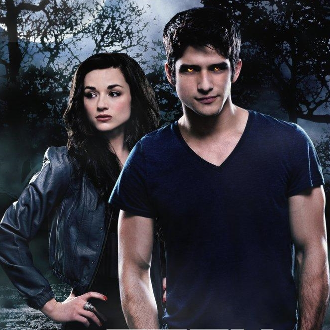

S É R I E S - M A N I A
|  | GÊNERO | Drama, Suspense, Sobrenatural e Ação |
|---|---|---|
| STATUS | Renovada | |
| ESTRÉIA | EUA 05/06/2011 | |
Teen Wolf (Jovem Lobo (título no Brasil)) é uma série de televisão americana que atualmente vai ao ar na MTV. A série estreou nos Estados Unidos em 5 de junho de 2011, após oMTV Movie Awards 20113 , estreou no Brasil no dia 3 de agosto de 2011 no Sony Spin (antigo Animax Brasil) e em Portugal no dia 24 de outubro de 2011 no Panda Biggs . Teen Wolf é um drama sobrenatural que segue Scott McCall (Tyler Posey), um estudante do ensino médio e socialmente excluído que é mordido por um lobisomem enquanto vagava pela floresta. Scott tenta manter uma vida normal, enquanto esconde de todos sua vida secreta como um lobisomem com exceção de seu melhor amigo Stiles Stilinski (Dylan O'Brien), que o ajuda a passar por essa mudança em sua vida e em seu corpo e também de outro lobisomem misterioso, Derek Hale (Tyler Hoechlin). A estréia da segunda temporada está marcada para 03 de junho de 2012 logo após o 2012 MTV Movie Awards. Em 12 de julho de 2012, Teen Wolf foi renovada para uma 3 ª temporada que irá incluir 24 episódios.